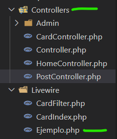
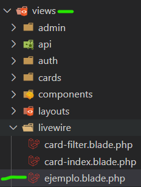
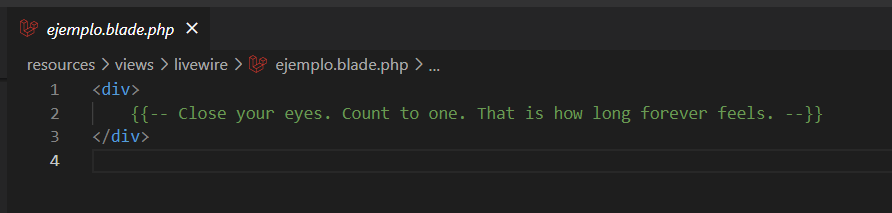
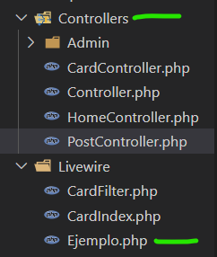
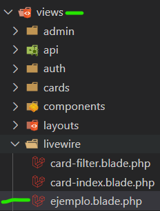
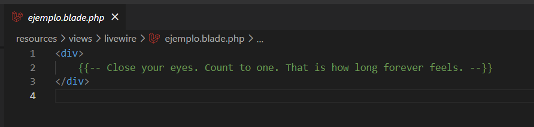

#Base de datos
# Agregar campos a una tabla vacia
Para agregar campos a una tabla sin datos, se modifica directamente las migraciones y luego para agregar los cambios ponemos el siguiente comando en nuestra terminal
php artisan migrate:fresh
Para agregar campos a una tabla sin datos y que utilice los seeders, utilizar el siguiente comando, despues de modificar las migraciones.
php artisan migrate:fresh --seed
# Agregar campos a una tabla con datos
Para agregar un nuevo campo a una base de datos con registros, ponemos en nuestra terminal el siguiente comando
php artisan make:migration add_"nombre del campo que desea
agregar"_to_"nombre de la tabla a la que se le
agregara"_table
Luego de eso ir a la migracion creada y agregar los nuevos campos en la funcion up. Todos los campos que se agreguen deben tener el atributo "nullable"
$table->string("campo_nuevo")->nullable();
ahora modificamos el metodo "down":
$table->dropColumn('"campo_nuevo"');
Finalmente ejecutamos el siguiente comando y ya tendriamos todo listo
php artisan migrate

# Vistas
# Pasar variables a una vista
Cualquier variable que deseemos pasar a nuestra vista, ya sea un valor numerico, texto, array , etc. Debera ser declarado en el controlador de dicha vista, para que esto ocurra debemos crear una funcion publica(en caso de que nuestro controlador solo tenga una funcion, a esa funcion se la llama "__invoke por convencion")
public function __invoke(){}
Dentro de la funcion definimos la varaible que deseamos pasar
$variable = "texto de prueba"
Una vez declarada la variable, usando la funcion compact se pasara la varaible a la vista(se pueden pasar "n" variables).
return view('vista_ejemplo', compact('variable'));
# Agregar una nueva vista "livewire"
Cuando deseemos agregar una nueva vista que use livewire, empezaremos poniendo el siguiente comando en la terminal
php artisan make:livewire "NombredelaVista"
Obtendremos un controlador que se encontrara en una carpeta llamada "livewire" dentro de la carpeta de controladores y obtendremos una vista ubicada en una carpeta llamada "livewire" que se encontrara en la carpeta de las vistas. Para llamar al componente livewire pondremos en la vista la siguiente linea de codigo
@livewire('NombredelaVista')
Todo codigo del componente debe ser escrito dentro de un div
 





# Reutilizar plantilla jetstream
Para que nuestras vistas puedan reutilizar la plantilla de jetstream, es bastante sencillo, bastara con poner la siguiente etiqueta
<x-app-layout>
Todo el codigo de nuestra nueva vista</x-app-layout>